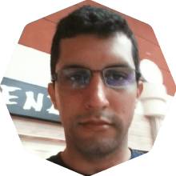
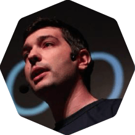
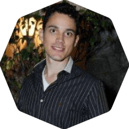
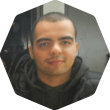
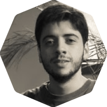
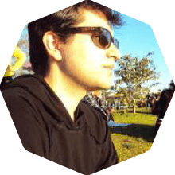
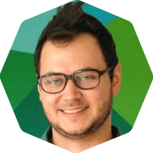
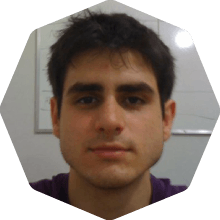
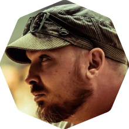

Veja as Palestras!
Videos
Keynote: Programadores Melhores
Criptografia para Desenvolvedores Rails
Escolhas de Frontend
Projeto Orientado a Objetos, Rails e Porque Você Deveria Pensar Duas Vezes Antes de Abandonar o Rails Way

Contribuindo com Open Source: do Início às Lições Aprendidas

Escrevendo sua DSL em Ruby

POROs para o Resgate
Ruby-Concorrente: Programação Concorrente com Ruby

Micro Problemas!

Construíndo um Single Page Application, Uma Página por Vez.

Arquitetura Limpa

Testes de Propriedade em Rails
25 Minutos de Web Semântica
MRuby: Mudando o Desenvolvimento Embarcado

Sobre Memória
Lendas Urbanas: O Código Que Você Escreve Lhe Torna Quem Você É

Devido a problemas técnicos, não foi possível gravar as palestras do Nick Sutterer e Simone Carletti. Foi mal aí, gente!